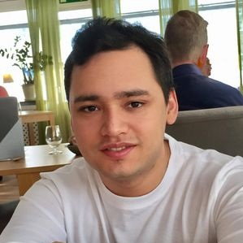

Bild på mig själv
Hej! Mitt namn är Francisco Mauricio De Leon Gonzalez och jag är en 27 årig kille som bor i Eskilstuna.
Jag är en utbildad Socionom men har alltid haft ett ganska starkt intresse för IT och teknik överlag.
Jag har även ett intresse för anime, gaming, träning samt tycker om att läsa.